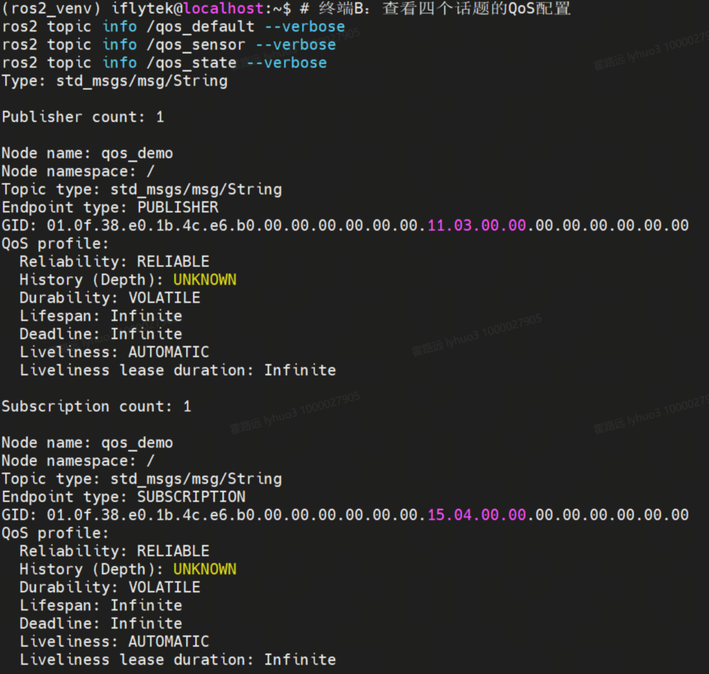
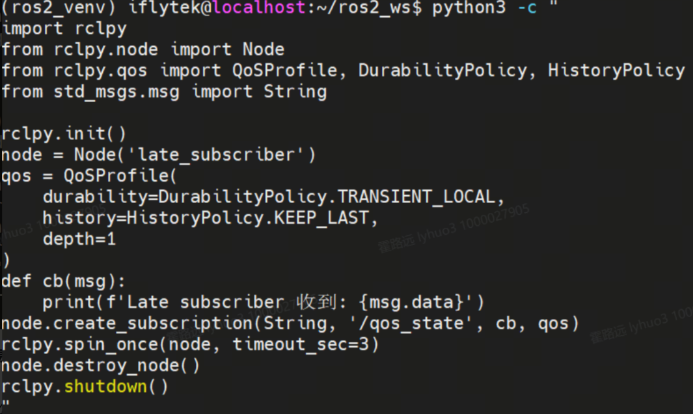

DDS 通信中间件剖析：RMW · RTPS · 自动发现
你已经会写 Publisher/Subscriber 了，但 "没写一行连接代码，两个节点为什么就能通？"——答案藏在 ROS2 的底座 DDS 里。本实验拆开这层黑盒：RMW 抽象层如何让 DDS 实现可热插拔，RTPS 协议的 Participant→Endpoint 域模型长什么样，SPDP+SEDP 两阶段自动发现如何让节点"开机即互通"。
01DDS 是什么：ROS2 换底座的原因
ROS1 的通信依赖一个叫 Master 的中心注册服务器：所有节点先去 Master 报到才能互相找到——Master 一挂，全网瘫痪。ROS2 直接换成了 OMG 组织的工业标准 DDS（Data Distribution Service），把"注册中心"下放到每个进程自带的能力里。
02核心原理：RMW——DDS 的"万能适配器"
你写的 rclpy 代码从来不直接碰 DDS。中间隔着两层：rcl（C API，定义"节点、发布、订阅该怎么做"）和 rmw（统一 C 接口，规定"DDS 厂商该提供哪些函数"）。各家 DDS 按这份"接口说明书"实现成共享库，运行时通过环境变量插拔。
export RMW_IMPLEMENTATION=rmw_cyclonedds_cpp 一行切换底层实现，代码零改动、无需重编译。ROS_DOMAIN_ID 下必须使用同一种 RMW 实现——不同实现说的话彼此听不懂。echo $RMW_IMPLEMENTATION 为空即默认 Fast-DDS；ros2 doctor --report | grep -i middleware 可确认当前生效的实现。03域模型：RTPS 协议的四层嵌套
RTPS（Real-Time Publish-Subscribe）是 DDS 的线上协议，规定了消息如何序列化、寻址和传输。它的世界按四层组织——正是 EXP-06 里 QoS 队列真正待的地方：
ros2 node list 里的每个节点 ≈ 进程里的 Participant；ros2 topic info --verbose 打出的 "GID" 就是 DataWriter 的 GUID 十六进制形式。CLI 看到的一切都能在 RTPS 概念里找到位置。04原理动画：从进程到网络的四层封装
动画演示一条消息的"下楼"过程：应用调用 publish → rcl 打包 → rmw 翻译 → RTPS 序列化后从 UDP 发出；对端四层"上楼"解包后回调给订阅者。
05自动发现两阶段：为什么不用写"连接代码"
回到开头的问题。DDS 用两阶段协议在后台默默完成一切：
239.255.0.1 周期性广播"我来了"（GUID + Domain ID）。收到的参与者把彼此记入花名册。这一步只要求 Best Effort——丢一两条没关系，下个周期还会发。| 阶段 | 解决的问题 | 类比 |
|---|---|---|
| SPDP | 网络里有谁、在哪个 Domain | 加工作群先看群成员列表 |
| SEDP | 每个人提供/消费什么话题、QoS 是否匹配 | 群里发公告对暗号，对上才加好友 |
06互动沙盘：亲手推进两阶段发现
点击按钮按真实时序推进：三个 Participant 上线 → SPDP 互播建立花名册 → SEDP 交换端点 → 按话题与 QoS 撮合成功：
互动 12-1｜推进 4 步：① 启动 → ② SPDP 多播互播（浅紫描边=已发现）→ ③ SEDP 交换端点清单 → ④ 撮合成功（绿色=数据链路建立）
ros2 topic list 秒级可见，但 echo 出数据还要再等撮合完成。07QoS 决策表：按数据特性选策略
EXP-06 你练过兼容规则，这里升级到选型能力——不同数据天生想要不同 QoS：
| QoS 策略 | 可选值 | 语义 | 典型场景 |
|---|---|---|---|
| Reliability | RELIABLE / BEST_EFFORT | 丢包重传 vs 尽力而为 | 控制指令 → RELIABLE；激光点云/图像 → BEST_EFFORT（丢帧可容忍、要低延迟） |
| Durability | VOLATILE / TRANSIENT_LOCAL | 晚来的订阅者收不收历史 | 实时流 → VOLATILE；地图、机器人状态 → TRANSIENT_LOCAL |
| History | KEEP_LAST(n) / KEEP_ALL | 缓存几条 | 状态量 → KEEP_LAST(1)；录制回放 → KEEP_LAST(1000) |
| Liveliness | AUTOMATIC / MANUAL_BY_TOPIC | 谁负责证明"我还活着" | 安全关键节点 → MANUAL（代码显式心跳） |
# 查看任一话题当前生效的完整 QoS 档案 ros2 topic info /chatter --verbose # 输出含：Reliability: RELIABLE / Durability: VOLATILE / GID: 01.0f... # 你的 QoS 代码里对应的声明（EXP-06 复习） qos = QoSProfile(history=HistoryPolicy.KEEP_LAST, depth=10, reliability=ReliabilityPolicy.RELIABLE)
08实操流程
# 步骤 1-2：确认并切换 DDS 实现（需要联网安装 CycloneDDS） echo $RMW_IMPLEMENTATION # 空 = 默认 Fast-DDS sudo apt install ros-humble-rmw-cyclonedds-cpp export RMW_IMPLEMENTATION=rmw_cyclonedds_cpp # 同一份代码零改动运行 ros2 run demo_nodes_cpp talker & ros2 run demo_nodes_cpp listener & # 步骤 5：观察发现结果与端点身份 ros2 topic info /chatter --verbose # GID（GUID）+ QoS 档案 ros2 node info /talker # 该 Participant 的端点清单 ros2 doctor --report | grep -i middleware # 收尾：切回默认实现 export RMW_IMPLEMENTATION=rmw_fastrtps_cpp
RMW_IMPLEMENTATION 后节点起不来 → 先确认 ros-humble-rmw-<vendor>-cpp 已安装；一个 Domain 内混用两种 RMW 实现的节点会互相看不见——不是故障，是协议不通。📸 指导书实操与现象截图（2 图）


09注意事项与验收清单
| ⚠️ 注意项 | 说明 |
|---|---|
| 纯软件实验 | 本实验不依赖传感器硬件，建议在纯软件环境专注理解通信机制 |
| RMW 一致性 | 同一 ROS_DOMAIN_ID 下所有节点必须使用同一种 RMW 实现 |
| 网络权限 | SPDP 依赖 UDP 多播——虚拟机/容器若关闭多播将导致发现失败 |
| Durability 三态 | VOLATILE / TRANSIENT_LOCAL / TRANSIENT，第三种需 DDS 持久化存储支持，课程默认前两者 |
- export RMW_IMPLEMENTATION=rmw_cyclonedds_cpp 后 talker/listener 零改动互通
- ros2 topic info /chatter --verbose 能指出 GID 与 QoS 档案
- 能对照解释 SPDP（找人）与 SEDP（找端点）各自职责
- RELIABLE vs BEST_EFFORT 高频+慢订阅场景对比，观察到丢帧差异
- TRANSIENT_LOCAL 订阅端晚启动仍能收到历史消息，VOLATILE 收不到
- 能为"激光点云"与"导航指令"分别推荐合适的 QoS 组合并说明理由
10实验总结与思考题
--verbose 读 QoS/GID、跑通 RELIABLE/BEST_EFFORT 与 VOLATILE/TRANSIENT_LOCAL 对比实验。ros2 topic info --verbose 的 QoS 输出；能按数据特性（延迟敏感/不能丢帧/要存量）做 QoS 选型。